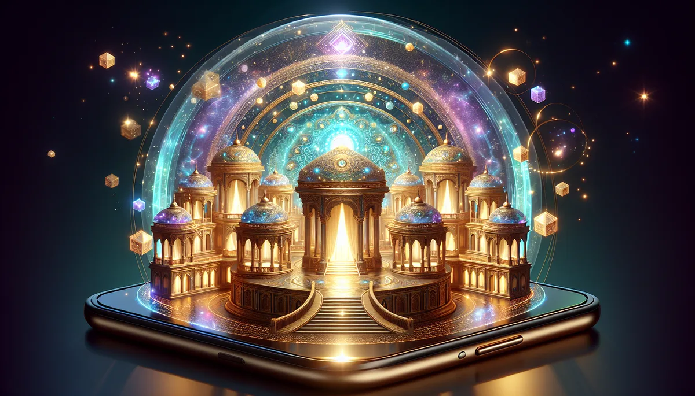

The Palace of Origin · 您內在的宮殿長什麼樣子？
每個人的內在都有一座宮殿。
它不在外面任何一個地方｜它在您閉上眼睛之後。
宮殿的模樣，反映的是您此刻的生命狀態。
而您有能力，親手整理它。
走進去。不要急，四處看看。每個房間代表您生命的一個面向。
注意您看到的｜光線、氣味、溫度、整潔程度、有沒有人在。
看見是第一步。但馥靈之鑰不是只讓您「看見」｜是讓您動手改。
您在觀想中看到任何讓您不舒服的東西｜門壞了、廚房髒了、花園枯萎了｜
您可以在觀想裡親手修復它。
把破掉的門修好。把過期的食物清掉，放進新鮮的水果。
替枯萎的花園澆水。把堆滿雜物的走廊清出來。
把臥室的窗簾拉開，讓光進來。
這不是「想像力遊戲」｜
您在觀想中做出的每一個整理動作，都是您的潛意識在重新設定。
您的身體和情緒會跟著動。